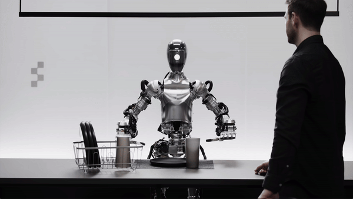

Auteur : Jean Dupont | Date : Octobre 2023 | Source : AgXeed
L'introduction de robots agricoles autonomes tels que l'Agbot T2 dans le groupe David semble être une réponse à la nécessité d'automatiser les tâches répétitives tout en complétant les opérations existantes.
L'idée de soulager les agriculteurs des travaux fastidieux, en particulier dans des conditions météorologiques difficiles, est pertinente. Cependant, le besoin d'une programmation humaine et le coût élevé pourraient limiter l'adoption généralisée de cette technologie.
La vision du groupe David d'intégrer la robotique de manière progressive et complémentaire aux équipements existants semble être une approche prudente pour rester à la pointe de l'innovation sans compromettre l'efficacité opérationnelle.
Bolt s'est associé à Starship Technologies pour tester la livraison autonome via des petits véhicules équipés d'IA. Le programme est à Tallinn, visant à réduire les coûts de livraison et concurrencer des acteurs comme Uber Eats et Deliveroo.
L'essor de la livraison autonome avec des bolides intelligents semble être une avancée prometteuse dans le secteur de la mobilité urbaine.
La collaboration entre Bolt et Starship Technologies montre comment les entreprises cherchent à diversifier leurs offres de services en adoptant des technologies autonomes.
Cependant, le succès à long terme de ces initiatives dépendra de la résolution de défis tels que la sécurité, la réglementation et l'acceptation du public.
L'expérimentation de la livraison autonome offre des perspectives passionnantes pour l'avenir de la logistique urbaine,
mais il sera intéressant de suivre le développement de ces projets et de voir comment ils s'intègrent dans le paysage urbain mondial.

Serve Robotics a développé des robots capables de livrer sans intervention humaine, sans flux vidéo, grâce à des capteurs sophistiqués et à la plateforme Nvidia. Leur déploiement prévu avec Uber Eats en 2025 pourrait transformer la logistique urbaine.
L'avancée de Serve Robotics vers des livraisons autonomes sans opérateur représente une étape significative dans le domaine de la technologie de livraison.
La capacité du robot à fonctionner de manière autonome, sans nécessiter de flux vidéo, offre des avantages en termes d'efficacité et de réduction des coûts opérationnels.
Cependant, le maintien de la sécurité à travers une surveillance humaine à des intersections souligne les défis persistants en matière de régulation et de fiabilité. Si ces obstacles peuvent être surmontés,
le déploiement prévu en partenariat avec Uber Eats en 2025 pourrait marquer une transformation majeure dans la manière dont les services de livraison sont gérés.
Verdie est conçu pour effectuer des tâches d'entretien telles que le désherbage et la taille en utilisant l'IA pour s'adapter à son environnement. Son déploiement est prévu pour 2024.
L'utilisation des ces robots autonomes comme notre exemple Verdie va présenter certains avantages pour l'efficacité et la durabilité de l'entretien
tout en réduisant la main-d'œuvre des humains pour des tâches "chiantes", Verdie offre une solution prometteuse pour soulager tout les travailleurs
tout en améliorant la productivité. De plus, l'intégration de l'IA permet à Verdie de s'adapter à divers environnements et conditions, offrant ainsi une
flexibilité opérationnelle précieuse pour les entreprises du secteur.

Figure 01 est présenté comme le robot humanoïde le plus avancé, utilisant Chat GPT pour une communication fluide. Soutenu par des entreprises comme Microsoft et Amazon, ce robot pourrait révolutionner des secteurs tels que la santé et l'assistance personnelle.
Le développement du robot Figure 01 marque une étape importante dans l'évolution de l'intelligence artificielle et de la robotique.
L'intégration de Chat GPT dans ce robot humanoïde apporte une nouvelle dimension à l'interaction entre humains et machines, en rendant les robots non
seulement opérationnels mais également capables de communiqué de manière fluide et intelligente. Cela pourrait transformé divers secteurs, notamment
le service à la clientèle, les soins de santé et l'assistance personnelle.
L'objectif de commercialiser ces robots à grande échelle témoigne de la confiance des investisseurs et des entreprises technologiques dans ce projet.

Elon Musk a annoncé le lancement d'Optimus Gen 2, un robot humanoïde capable de tâches répétitives avec un prix d'environ 22 000 euros. Ce robot est destiné à être utilisé dans les usines Tesla.
Elon Musk affiche une confiance notable dans le succès commercial de ce robot, ce qui est cohérent avec l'historique
d'innovation de Tesla. Cependant, l'entrée sur le marché de robots humanoïdes soulève également des questions importantes sur l'impact sur
l'emploi et la nécessité de réguler l'utilisation de l'intelligence artificielle dans ces machines. La concurrence de startups comme Figure AI,
avec son robot capable de conversations intelligentes, et d'entreprises établies comme Boston Dynamics, qui continue d'innover avec des
modèles performants, montre que le secteur est en pleine effervescence. Le défi pour Tesla sera de démontrer que ses robots peuvent non
seulement rivaliser sur le plan technologique mais aussi s'intégrer de manière harmonieuse et bénéfique dans divers environnement
s industriels et domestiques.